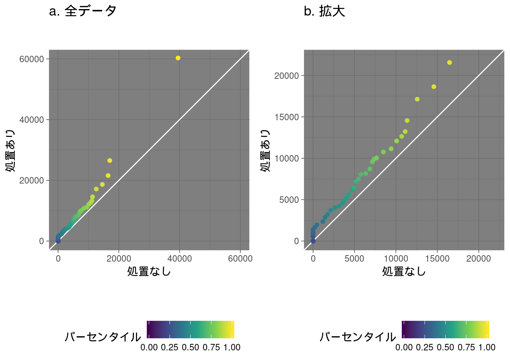

- Japan.R 2018 に参加しました
- 発表の感想
- Long Talk
- Lightning Talk
- gepuro task views 2nd by @gepuro
- 条件付き相互作用の分析 by 太田博三
- DID 分析の説明 by やぎべゑ
- contextual パッケージでバンディットアルゴリズムの検証 by @housecat442
- スポーツチームでの R 活用の可能性 (ラグビーでの例を通して) by Koichi Kinoshita
- 分析屋が福岡に移住して２年経った話 by @doradora09
- SagemakeR by @hiratake55
- Rによる分位点処置効果推定の話 by Yusuke Kaneko
- なんかやる（高速化周りかも） by かんこれ
- アラサーエンジニア シティボーイ化計画 - 都会のお得物件を統計的に探してみる - by @hana_orin
- Rcpp パッケージで外部 C++ ライブラリを使う by @heavywatal
- digdag で R をバッチり回す by @chengvt
- R で書く R コンパイラ by @igjit
- （仮）深層学習か画像認識で何かやります by nakamichi
- 関数魔改造講座 (formals編) by atusy
- Player Rating with R by shrrt
- 量子化学 (フラグメント分子軌道法) でも R したい(薬) 川嶋裕介
- ぼくの町の不安定 by tanaka_marimo
- この IR のグラフがすごい! 上場企業2018 @ito_yan
Japan.R 2018 に参加しました
今回も多種多様でハイレベルな発表でしたね。
個人的には自称 BeginneR 達の躍進が嬉しかったです。
短期間に ggplot2 パッケージや leaflet パッケージを使えるようになって LT してくれる、
これはコミュニティの情報共有の目醒ましい成果だと思います。
LTでは「 関数魔改造講座 (formals編) 」を発表しました。 英題は “Formals for black magicians”。 皆さんの心に残る発表ができましたね！！ (迫真) ただ、時間切れもいいところだったのが残念であります。 関数の引数を弄るとどんな面白いことができるか、もっと話したかった。 記事にするか続編 LT するか……。
色んな方とお会いできてよかったです。 皆さんともっとお話ししたかったですね。 また機会を見つけて東京にやって来るつもりです。 そのときはかまってあげてください。
@gepuro 氏による Youtube と Togetter と Connpass のリンク貼っときます。
- Youtube: https://youtu.be/sXXXsb1MNMk
- Togetter: https://togetter.com/li/1294419
- Connpass: https://japanr.connpass.com/event/105802/
発表の感想
感想といいつつ、脱線して自分の興味語ってるところ多いです。
Long Talk
R によるシステム開発入門 by @kos59125
R はシステム開発には向いていないなんていうのは、 他言語ユーザのマウントとの至言を頂きました。
システム開発辛いから他の言語勉強しなきゃなんて卑下してはいけませんね！！
また一つ、R 沼の底を探せという天啓を得た気がします (ぇ
Web UI を提供する shiny パッケージを始め、
バッチ処理方法の例ででてきた digdag とか、
Web API を提供するための plumber パッケージとか、
この話で出てきた内容が後々の発表で紹介されてて、
偶然ながら (？) 良いイントロになりましたね。
天啓を得ただけではなく、多くの人が R でシステム開発にどんどん取り組んでいるということに気付かされました。
あとは、 littler 試してみようと思う。
ユタニさんが過去に紹介 していますね。
これは R CMD BATCH よりも起動が速いらしい。
これも既に紹介してる人がいる
bioinfomatics: Rバッチモード 。
R Markdown テンプレートの作り方 by @kazutan
言わずと知れた
zousan::zousan_document()
の作者ですね。
テンプレート作成は pandoc との戦い……深い。
限られた尺の中、 R おじさん編は省略されました。
R アドカレ 4日目に完全版を記事にしていただけるそうなので、期待！
個人的には RStudio で File > New File > R Markdown... すると
サンプルコード入れてくるのがうっとうしいのと、似たよなチャンクオプション毎度使うのとで、
なんとかした分野。
ただ、テンプレートは増えると探しにくいので、 blogdown パッケージの new_post() みたいに、
コマンドでテンプレートからファイルを作成するところまでやりたです。
とりあえず new_nb() と new_rmd() みたいな関数定義しようかな。
GUI で簡単！モダンなデータ解析 by @efprime_jp
R AnalyticFlow という Java で動く R の IDE 的な何かの紹介。
データ分析のプロセスをフローチャート形式で整理。視覚化されたプロセスはマウス操作で誰でも簡単に、かつ正確に再現することができます。
というのがウリ。 ソースを解析して、不足パッケージがあればインストールの提案をしてくれるなど、 R を普段使いしない人とソースを共有するのにうってつけなシステム。
なぜかアジア圏で人気で、multibyte 文字に強いせいからかもしれないとのこと。
いや、ほんと RStudio の multibyte の扱いには辟易しますよね。 私は RStudio Server を使うことで、日本語をまともに扱えるブラウザなら大丈夫な状態です。 ただ、 Firefox で動かすとカーソル位置がずれるのが悩み。 Chrome や Edge をクライアントにしています。
それはそうと、R AnalyticFlow の目下の悩みは、 glmnet パッケージなどの定番パッケージが R 標準パッケージにならないことだそう。
個人的には
pkgdown
で RAnalyticFlow メタパッケージを作り、
R AnalyticFlow 起動の際に自動インストールする仕掛けを作ったらいいんじゃないかなーと思う。
これなら、追加したいパッケージが現れてもソフトウェア本体を更新せず、メタパッケージだけ更新すればいい。
というわけで Twitter 上で提案してみたけどどうなるかなあ？
Shiny 完全に理解した by @Med_KU
メッド・ケーユーさんの発表。 メドクさんだと思ってた。
shiny に留まらず、 htmlwidgets や googleVis も含め、対話的に R を利用する方法を紹介頂きました。
htmlwidgets の代表格は今回も紹介されていた pltoly でしょうか。
しかし、 ggplot2 ユーザーなら、 ggplotly() で ggplot2 な図を一発で対話的なものに変換でき学習コストが最小限です。
探索的なデータ分析をする時には是非、覚えておくと良いツールです。
googleVis は名前を聞いたことがある程度だったのですが、かなり色んなことができるみたいです。
拡張性は低いかもしれませんが、色んな図を描ける模様。
htmlwidgets のギャラリーをあまり眺めてこなかったので、要チェックだなと思いました (http://gallery.htmlwidgets.org/)。
今後のRに shiny は必要不可欠な存在として君臨し続けると思いますが、
ある程度は R AnalyticFlow + plotly or googleVis で済ませてしまえるんじゃないかなあと話を聞いてて思いました。
システム開発まではいかない、その場限りのデータ探索や、中間成果の共有のために shiny してられませんからね。
Lightning Talk
gepuro task views 2nd by @gepuro
https://www.slideshare.net/gepuro/gepuro-task-views-v20-japanr-2018
Japan.R 運営代表によるLT。
トライアスロンの成果報告にて去年は機材の重要性を、今年は練習の重要性を訴えました。
それから gerupo task views という GitHub 上にある R パッケージをクローリングして一覧するプロジェクトの今後について語って頂きました。
オープンソース化して、精度改善とか保守とかみんなでできるといいよね。
条件付き相互作用の分析 by 太田博三
おなかいたくてといれこもってました。 きけてません。 ごめんなさい。
DID 分析の説明 by やぎべゑ
就活で説明不要と思ってたら説明求められてしどろもどろしちゃった DID 分析について、 なぜか Japan.R で説明してくれたお話。
できなかったことをできるようになったけど、もう機会がない、無念、で終わると、ひょんな機会が生じた時に困るかもしれない。
アウトプットの機会を虎視眈々と狙って纏めておくと、本番で困りませんね。
ステキ！
Twitter 上では DID 分析に馴染み深い人たちからのテンション上がったツィートが散見されました。
処置群を無作為抽出できない時に選択バイアスの効果を取り除けるらしい。
地質学でも使えるところあるかなー。
contextual パッケージでバンディットアルゴリズムの検証 by @housecat442
商品を絞りつつ、売上の期待値を最大化する選択をするための手法、でよかったっけ？ 単純に売り上げの良いものを順にピックするのではなく、ある商品に興味のある消費者が他にどんな商品に興味持っているかを加味してくれるみたい。
例示がよくて、 A/B テストとの違いが明瞭だったように思う。
しかし、同じように説明できないどころか、手法の内容が正しかったかすら怪しい無能な私。
スポーツチームでの R 活用の可能性 (ラグビーでの例を通して) by Koichi Kinoshita
優しく殺されたい BeginneR による発表。
優しく (褒め) 殺せばいいのでしょうか？
データを解釈するには平均のような要約した数字だけじゃなくて、 分布を見るのも大事だという、 忘れられがちなところに注目していて、 皆さん好印象だったように思います。
今あるデータからどこまで言えるのか、を常に考えてらっしゃったところも非常に良かった。
是非、世界一のスポーツデータアナリストになって欲しいですね！！
分析屋が福岡に移住して２年経った話 by @doradora09
福岡で勉強会やろうぜって話と酒飲もうぜって話。
私も地方勉強会やってみたいなあ。もくもく会もいい。
地方は発表者集めるのが大変らしいし、いたら発表してもらって残りの時間はもくもくタイムとか……？
九州に出張する機会があれば立ち寄ってみたいなあ。
SagemakeR by @hiratake55
AWS サービスの1つである Sagemaker で R が使えるということでその紹介。
- Jupyter Notebook でのモデル開発
- GPUやマルチインスタンスによる学習
- デプロイ
をステップワイズに簡単にできるようにしてくれるらしい。
ほんまかうそか、 Jupyter は Julia Python R の略らしいので、 R も使えるのは道理ですね。
R を使う場合は plumber パッケージで Web API を提供すればいいらしい。
Rによる分位点処置効果推定の話 by Yusuke Kaneko
なんかハイレベルな話をまくしたててらして、 「よぅ舌回らはんなー」 と思っている内に発表が終わりそうでした。
処置の効果は、処置前の性能に比例しちゃうんじゃないの？ じゃあどうやって効果と処置前の性能の関係を見出せばいいの？ 分位点処置効果推定使って、例えば下四分位点と上四分位点を処置を受けた群と受けていない群で比較すればいいよね。 という話……であってたっけ？
例えば職業訓練による収入の増加は、訓練前の収入に比例してしまうんじゃないかという話になった時、 各群の下四分位点の差は小さいけど上四分位点の差が大きければ、その通りと言えそうって話かな？
後半ついてけてないですが。
四分位点だけ比べるなんてことせず、パーセンタイルを1ポイントずつとか細かく区切って比べたら面白そうと思った。 平均や分散のスケーリングとはまた一風異なった、分布によらないロバストな比較に使えるんじゃないかな、と。
で、 Matching パッケージの lalonde データセットを使って試してみた。
すると，以下の解釈ができそうと判った。
- 職業訓練による収入の増加は、訓練前の収入に比例している。
- 職業訓練の結果、就職できた人達が \(x = 0\) 上に並んでいる。
- この訓練で就職できる人できない人が現れる理由を可視化するには、 収入以外の就業状況に依存しない性能で同様の図を作ればいい。
## Package is already on your system.
library(pacman)
p_install(Matching, force = FALSE)
p_load(dplyr, ggplot2, purrr, tidyr)
p_load_gh("thomasp85/patchwork")
data("lalonde", package = "Matching") # install.packages("Matching")
g <- lalonde %>%
select(re78, treat) %>%
nest(-treat) %>%
mutate(
quantiles = list(seq(0, 1, .02)),
treat_q = map2(data, quantiles, ~ quantile(.x$re78, .y))
) %>%
select(-data) %>%
unnest %>%
spread(treat, treat_q) %>%
mutate(diff = `1` - `0`) %>%
ggplot(aes(x = `0`, y = `1`, colour = quantiles)) +
geom_abline(slope = 1, intercept = 0, colour = "white") +
geom_point() +
scale_colour_viridis_c(name = "パーセンタイル") +
theme_dark() +
theme(
legend.position = "bottom"
) +
labs(x = "処置なし", y = "処置あり")
wrap_plots(
g +
coord_fixed(xlim = c(0, 60e3), ylim = c(0, 60e3)) +
ggtitle("a. 全データ"),
g +
coord_fixed(xlim = c(0, 22e3), ylim = c(0, 22e3)) +
ggtitle("b. 拡大")
)なんかやる（高速化周りかも） by かんこれ
欠席。
アラサーエンジニア シティボーイ化計画 - 都会のお得物件を統計的に探してみる - by @hana_orin
生かされたい BeginneR による発表。
直前の人が欠席で心の準備できてなかったそうですが、全然、それを感じさせませんでした。 私も同じパターンになりましたが、あれは心にキますね。
イマドキの BeginneR って ggplot2 パッケージとか leaflet パッケージとか綽々と使うのな！
フィールドワークもしてて凄い……。
ちょっと前の BeginneR も ggplot2 パッケージ使ってたし、 BeginneR が恐れずモダンな R を実践できるのは
R ユーザーコミュニティによる日頃の情報共有のおかげだなあとしみじみ。
そんなこんなで感銘してしまって、内容についての感想があまり出てこないのが恥ずかしい。すみません
Twitter ではみんな暖かい評価で、あんなことやこんなことすると面白いんじゃないかと語ってましたね。
Rcpp パッケージで外部 C++ ライブラリを使う by @heavywatal
https://heavywatal.github.io/slides/japanr2018/
tidyvese パッケージ ヘルプサイトの持ち主こと、へびわたさんの発表。
いや、 tidyvese パッケージに限らず、備忘録と呼ぶことが畏れ多い纏まった情報を提供されているので、訪れたことのない人は是非、見て見て下さい。
Rcpp パッケージなんか怖くて手を出していないので、ほげーって思いながら見てた。
ただ、冒頭のベンチマークの結果はびっくりしましたね。 もしあれがコンパイル時間込みの話であれば、是非使いたいと思います。
まずは自分でベンチマークしてみよう。
ベンチマークしてみた
出直してきた．コンパイルはハイコストみたいです． pic.twitter.com/QkbbMJ8WKY
— atusy (@Atsushi776) December 4, 2018
コンパイル時間は多少かかるので，やっぱり適材適所ですね．
digdag で R をバッチり回す by @chengvt
https://speakerdeck.com/chengvt/japan-dot-r-2018-lt
Long talk でざっと解説された R でシステム開発する方法の一つ、 digdag を使った定期バッチ処理の話。 私はバッチ処理が必要になったことがないのですが、便利なツールを知っておけてよかった。 必要な時にキーワードが分からないとググりようもないです。 要不要問わず、耳学問しておけるのが、こういう会の魅力ですね。
R で書く R コンパイラ by @igjit
https://igjit.github.io/slides/2018/12/nrc/#/
パイプ演算子自作で R メタプログラミング入門された方が、 R で Lisp インタプリタを書いた次に、 R で R のコンパイラを書いてしまった話。
変態トークを聴きたい変態勢にとって、直後の私の発表も含め、良いデザートだったようですね。
そうじゃない人たちからは、 @igjit さんと私の話が LT 後半でよかったとのこと。 冒頭だったら魂消て後の発表を聴く体力を失いかねないところ、このタイミングだったので、あと4本、と気力を出して聴けたとか。
（仮）深層学習か画像認識で何かやります by nakamichi
欠席。次が自分の番で油断してました。 発表直前にスライドのURL投下しようと思ってたので、慌ててやったらコピーできておらず、直前にコピーした別のURLを投下してしまった。
関数魔改造講座 (formals編) by atusy
私の発表。
時間不足で応用例を示せず、なんで formals を弄るといいのか、説明できなかった。
ウケ狙いで魔改造に焦点を置きました。 おかげで、なんでこんなことできるようになったのか懇親会で数度聞かれましたね。 勿論、最初から魔改造したくて身につけた技術ではないのですが、その辺りについてはまたどこかで。
Player Rating with R by shrrt
この間の Tokyo.R 73 でもそうだったんですが、自分の発表の直後ってなんだか自分の発表を色々振り替えってしまって頭に入ってこない……。 申し訳ないです。
量子化学 (フラグメント分子軌道法) でも R したい(薬) 川嶋裕介
https://docs.google.com/presentation/d/1QSm7EDgNk7OeLWb266LZ57787v0tybirQ3Kr5A9cmHA/edit#slide=id.p
同上。 後半から復活してたんですが、既についていける話じゃなくなっていた。 ごめんなさい。
ぼくの町の不安定 by tanaka_marimo
https://speakerdeck.com/tanaka_marimo/bokufalseting-falsebu-an-ding
復活したけど、お腹が空いて力が出なくなってました。
みんなが認める高度な掴みでした。
ロジスティクモデルに対してシンプルなロバスト拡張を行ってのけるのすごい。 是非、コードを共有して欲しいですね。
共有して頂きました!!
この IR のグラフがすごい! 上場企業2018 @ito_yan
クソグラフ・オブ・ザ・イヤー。 初 Japan.R 勢なので知らなかったのですが、毎年恒例っぽい。 良い可視化の例を見るだけでは、なぜ良いものになっているのか気付きにくい。 こういう解説付けてもらえる機会があると良い可視化で意識すべきポイントを抑えられるようになっていいですね。
それはさておいて、とにかくおもろい。